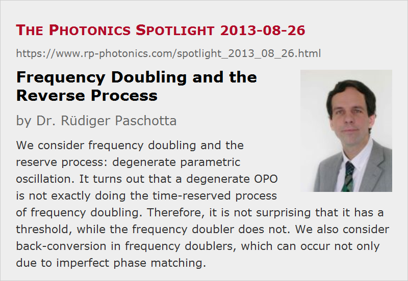

Frequency Doubling and the Reverse Process
Posted on 2013-08-26 as a part of the Photonics Spotlight (available as e-mail newsletter!)
Permanent link: https://www.rp-photonics.com/spotlight_2013_08_26.html
Author: Dr. Rüdiger Paschotta, RP Photonics Consulting GmbH
Abstract: We consider frequency doubling and the reserve process: degenerate parametric oscillation. It turns out that a degenerate OPO is not exactly doing the time-reserved process of frequency doubling. Therefore, it is not surprising that it has a threshold, while the frequency doubler does not. We also consider back-conversion in frequency doublers, which can occur not only due to imperfect phase matching.

Years ago, in a Ph. D. viva I heard the following interesting question:
A degenerate optical parametric oscillator (OPO) converts green light at 532 nm, for example, into infrared light at 1064 nm. This is just the opposite of what a frequency doubler, pumped with a 1064-nm laser, does. How can it be that the OPO works only above a certain threshold power, whereas the frequency doubler has no threshold? After all, isn't one process just the time-reserved version of the other process?
The Ph. D. candidate who got that question was taken by surprise. A colleague of him, who was a listener on that day and had his viva a few weeks later, then got the same question and failed as well. I wondered whether the professor asking the question actually knew the answer himself!
Anyway, the answer is not that difficult to find, although one may easily miss one detail and therefore require some time. Consider what exactly is the time-reserved process of frequency doubling. The frequency doubler has an input at 1064 nm and only partially converts that to 532 nm; some of the 1064-nm light exits the crystal unconverted. So the time-reversed process requires two inputs: one at 532 nm, but also one at 1064 nm! If you really do that properly, you can convert all the light back to 1064 nm – not only above some threshold.
Here, another interesting question arises. How can the crystal “know” whether it is supposed to transfer optical power from the fundamental to the harmonic wave, or vice versa? If you heard rumors that it is the relative phase between the two beams, you may (or should!) wonder how one can compare phases of beams with different optical frequencies – doesn't that phase difference change substantially within attoseconds!? Well, we have to look at the physics occurring in the nonlinear crystal. The fundamental wave generates a nonlinear polarization wave, having twice the optical frequency – i.e., the frequency of the harmonic wave. That polarization wave now interacts with the existing harmonic wave, and the relative phase between these two is what determines the direction of power transfer. How, the phase of the nonlinear polarization at the second harmonic is twice the phase of the fundamental wave. The relevant phase difference is thus not that between fundamental and harmonic, but rather twice the fundamental phase minus the harmonic phase.
That relative phase is also affected by the phase mismatch. So if we don't have proper phase matching of our process, the relative phase changes such that after some short distance the direction of energy transfer is reversed. That's why phase matching is essential for efficient nonlinear power conversion.
Even with perfect phase matching, a frequency doubler can run into back-conversion when operated at too high intensities: if the fundamental wave is fully depleted at some point, back-conversion will take place after that point. Note that for a Gaussian beam profile, for example, that will occur before the conversion of the wings of the beam profile is complete. For that reason, 90% conversion is not possible with Gaussian beams – at least in a single pass. With resonant frequency doubling, such a limit wouldn't apply; here, the single-pass conversion doesn't need to be high for complete overall conversion.
This article is a posting of the Photonics Spotlight, authored by Dr. Rüdiger Paschotta. You may link to this page and cite it, because its location is permanent. See also the RP Photonics Encyclopedia.
Note that you can also receive the articles in the form of a newsletter or with an RSS feed.
Questions and Comments from Users
Here you can submit questions and comments. As far as they get accepted by the author, they will appear above this paragraph together with the author’s answer. The author will decide on acceptance based on certain criteria. Essentially, the issue must be of sufficiently broad interest.
Please do not enter personal data here; we would otherwise delete it soon. (See also our privacy declaration.) If you wish to receive personal feedback or consultancy from the author, please contact him e.g. via e-mail.
By submitting the information, you give your consent to the potential publication of your inputs on our website according to our rules. (If you later retract your consent, we will delete those inputs.) As your inputs are first reviewed by the author, they may be published with some delay.
|  |
If you like this page, please share the link with your friends and colleagues, e.g. via social media:
These sharing buttons are implemented in a privacy-friendly way!